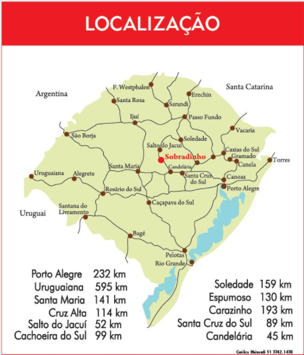

Informações Gerais
- Nome do Município: Sobradinho
- Associação: AMCSERRA
- Prefeito: Luiz Affonso Trevisan, Partido: PMDB
- Vice-Prefeito: Armando Mayerhofer, Partido: PMDB
- Endereço da Prefeitura: Rua General Osório, 200 - Centro, CEP: 96900-000
- E-mail: administracao@sobradinho-rs.com.br/ assessoria@sobradinho-rs.com.br financas@sobradinho-rs.com.brCPNJ: 87592861000194
Informações Populacionais
População em 2000: 16.328; em 2003: 14.121; em 2004: 14.287; em 2007: 14.162.
Descrição
O município de Sobradinho situa-se na região Centro Serra e integra a Associação dos Municípios da Região Centro Serra (AMCSERRA). Sobradinho faz divisa ao Norte com o município de Arroiro do Tigre, ao Sul com Lagoa Bonita do Sul, ao Leste com Passa Sete e Segredo, e ao Oeste com Ibarama. A altitude do município de Sobradinho em sua sede é de 427 metros; Longitude -53,029; Latitude -29,421.